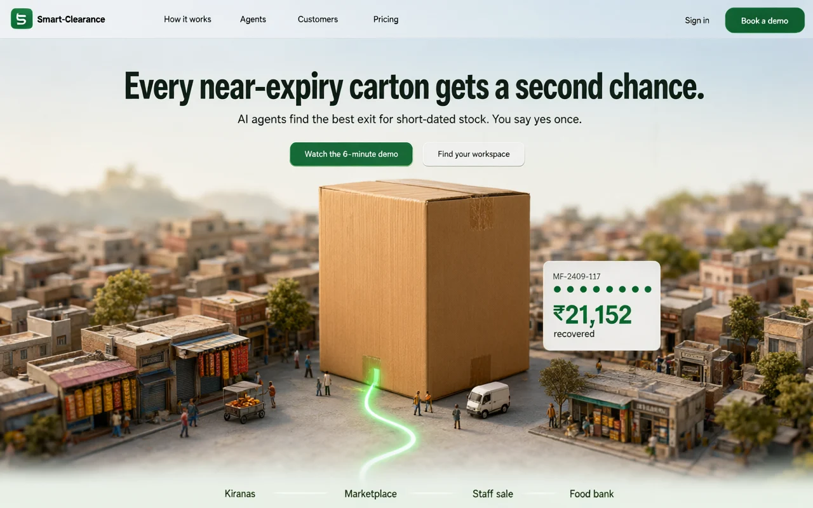

L1 Hero Approved
The headline, one line of what it does, and two ways in: watch the demo, or find your workspace. The tracker card pins the outcome to the carton.
- Interaction
- On arrival the card fills its nine stops and rolls to ₹21,152 once, in under five seconds, then stops. Sign in opens a menu: Find your workspace, Munchly Foods, Smart-Clearance staff.
- In the build
- This image is the measured spec. The town is regenerated at full resolution; every word, button and card is real HTML.